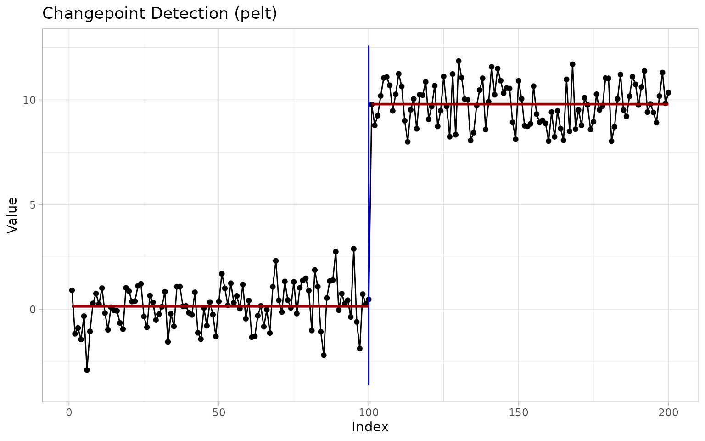
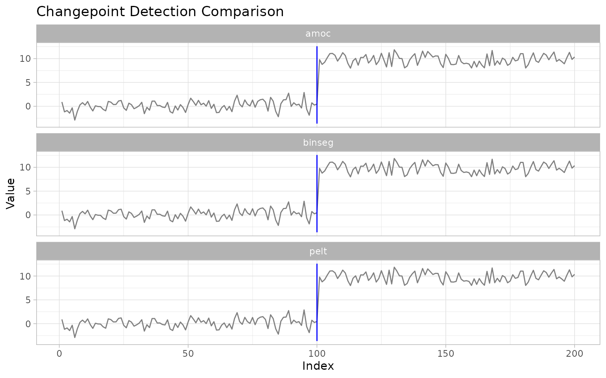
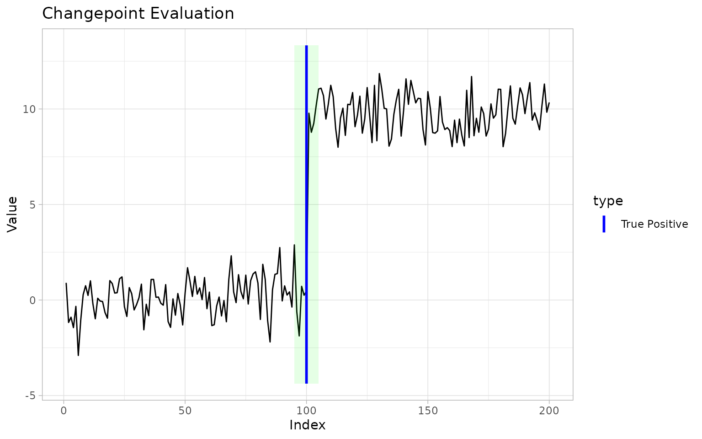

Introduction
This vignette gives a quick tour of every major feature in
ggchangepoint. See vignette("introduction") for a detailed
walkthrough and vignette("comparison") for method
comparison.
Core detection
The unified entry point is cpt_detect():
res <- cpt_detect(x, method = "pelt", change_in = "mean")
res
#> ggcpt (changepoint detection result)
#> Method: pelt
#> Change in: mean
#> Changepoints found: 1
#> CP convention: left
#> Penalty: MBIC = NA
#> Series length: 200
#>
#> Changepoints:
#> # A tibble: 1 × 2
#> cp cp_value
#> <int> <dbl>
#> 1 100 0.467Broom methods
Every result object supports tidy(),
glance(), and augment():
tidy(res)
#> # A tibble: 1 × 2
#> cp cp_value
#> <int> <dbl>
#> 1 100 0.467
glance(res)
#> # A tibble: 1 × 9
#> n n_changepoints method change_in penalty_type penalty_value cp_convention
#> <int> <int> <chr> <chr> <chr> <dbl> <chr>
#> 1 200 1 pelt mean MBIC NA left
#> # ℹ 2 more variables: total_cost <dbl>, runtime <dbl>
augment(res)
#> # A tibble: 200 × 6
#> index value seg_id .fitted .resid is_changepoint
#> <int> <dbl> <int> <dbl> <dbl> <lgl>
#> 1 1 0.900 1 0.139 0.761 FALSE
#> 2 2 -1.17 1 0.139 -1.31 FALSE
#> 3 3 -0.897 1 0.139 -1.04 FALSE
#> 4 4 -1.44 1 0.139 -1.58 FALSE
#> 5 5 -0.331 1 0.139 -0.470 FALSE
#> 6 6 -2.90 1 0.139 -3.04 FALSE
#> 7 7 -1.06 1 0.139 -1.20 FALSE
#> 8 8 0.278 1 0.139 0.139 FALSE
#> 9 9 0.749 1 0.139 0.611 FALSE
#> 10 10 0.242 1 0.139 0.103 FALSE
#> # ℹ 190 more rowsAdditional S3 methods
The ggcpt class also provides summary(),
as_tibble(), as.data.frame(),
format(), and plot():
summary(res)
#> ggcpt Summary
#> Method: pelt
#> Change in: mean
#> Changepoints found: 1
#> CP convention: left
#> Series length: 200
#> Penalty: MBIC = NA
#> Runtime (seconds): 0.016
#>
#> Segments:
#> # A tibble: 2 × 5
#> seg_id start end n param_estimate
#> <int> <dbl> <int> <dbl> <dbl>
#> 1 1 1 100 100 0.139
#> 2 2 101 200 100 9.80
#>
#> Changepoints:
#> # A tibble: 1 × 2
#> cp cp_value
#> <int> <dbl>
#> 1 100 0.467
as_tibble(res)
#> # A tibble: 1 × 2
#> cp cp_value
#> <int> <dbl>
#> 1 100 0.467
plot(res)
Visualisation
autoplot() renders any result with
ggplot2:
autoplot(res, show_segments = TRUE)
Custom geoms and stats
The package ships four composable layers:
cp_tbl <- tidy(res)
# Standalone geom
ggplot(data.frame(index = seq_along(x), value = x), aes(index, value)) +
geom_line() +
geom_changepoint(data = cp_tbl, aes(xintercept = cp), color = "red")
# Compute-and-draw stat
ggplot(data.frame(index = seq_along(x), value = x), aes(index, value)) +
geom_line() +
stat_changepoint(method = "pelt", color = "red")
# Segments and CIs
ggplot(data.frame(index = seq_along(x), value = x), aes(index, value)) +
geom_line() +
geom_cpt_segment(data = cp_tbl, aes(xintercept = cp))
# Theming and segment shading
ggplot(data.frame(index = seq_along(x), value = x), aes(index, value)) +
geom_line() +
geom_changepoint(data = cp_tbl, aes(xintercept = cp)) +
theme_ggcpt() +
annotate_segments(cp = cp_tbl$cp, n = length(x))Penalty configuration
Construct standard penalty values:
cpt_penalty("BIC", n = 200)
#> [1] 5.298317
cpt_penalty("MBIC", n = 200, k = 1)
#> [1] 10.59663
cpt_penalty("Manual", value = 10)
#> [1] 10Method introspection
cpt_methods() returns the full table of available and
planned methods:
cpt_methods()
#> # A tibble: 26 × 6
#> method change_in engine status target_release installed
#> <chr> <chr> <chr> <chr> <chr> <lgl>
#> 1 pelt mean, var, meanvar changepoint available NA TRUE
#> 2 binseg mean, var, meanvar changepoint available NA TRUE
#> 3 segneigh mean, var, meanvar changepoint available NA TRUE
#> 4 amoc mean, var, meanvar changepoint available NA TRUE
#> 5 np distribution changepoint.np available NA TRUE
#> 6 ecp distribution ecp available NA TRUE
#> 7 fpop mean fpop available NA TRUE
#> 8 wbs mean wbs available NA TRUE
#> 9 wbs2 mean breakfast available NA TRUE
#> 10 not mean, var, slope not available NA TRUE
#> # ℹ 16 more rowsPer-engine wrappers
For fine-grained control, each engine has its own wrapper:
fpop_wrapper(x, penalty = 2 * log(200))
wbs_wrapper(x, n_intervals = 2000)
not_wrapper(x, contrast = "pcwsConstMean")
mosum_wrapper(x)
idetect_wrapper(x)
tguh_wrapper(x)Method comparison
Compare multiple methods in a single visualisation:
suppressWarnings(
ggcpt_compare(x, methods = c("pelt", "binseg", "amoc"))
)
ggcpt_compare_table(x, methods = c("pelt", "binseg", "amoc"))
#> # A tibble: 3 × 3
#> method cp cp_value
#> <chr> <dbl> <dbl>
#> 1 pelt 100 0.467
#> 2 binseg 100 0.467
#> 3 amoc 100 0.467Evaluation
When ground truth is known, compute accuracy metrics:
cpt_metrics(pred = c(100), truth = c(100), n = 200, margin = 5)
#> # A tibble: 1 × 12
#> n n_pred n_truth precision recall f1 covering hausdorff rand_index
#> <int> <int> <int> <dbl> <dbl> <dbl> <dbl> <dbl> <dbl>
#> 1 200 1 1 1 1 1 1 0 1
#> # ℹ 3 more variables: annotation_error <int>, mae_matched <dbl>,
#> # rmse_matched <dbl>
cpt_metrics_annotated(c(100), list(c(100), c(101), c(99)), n = 200, margin = 5)
#> # A tibble: 1 × 7
#> n n_annotators n_pred precision recall f1 covering
#> <dbl> <int> <int> <dbl> <dbl> <dbl> <dbl>
#> 1 200 3 1 1 1 1 0.993
ggcpt_eval(pred = c(100), truth = c(100), data_vec = x)
Data simulation
Generate synthetic data with known changepoints:
dat <- cpt_simulate(200, changepoints = c(100), change_in = "mean",
params = c(0, 10), sd = 1)
attributes(dat)$true_changepoints
#> [1] 100
rcpt(200, changepoints = c(100), change_in = "mean", params = c(0, 10))
#> # A tibble: 200 × 3
#> index value seg_id
#> <int> <dbl> <int>
#> 1 1 0.825 1
#> 2 2 -2.15 1
#> 3 3 0.276 1
#> 4 4 1.07 1
#> 5 5 1.72 1
#> 6 6 0.300 1
#> 7 7 1.10 1
#> 8 8 0.515 1
#> 9 9 0.489 1
#> 10 10 -1.01 1
#> # ℹ 190 more rowsBuild-in test signals:
signal_blocks(200)
#> # A tibble: 200 × 2
#> index value
#> <int> <dbl>
#> 1 1 0.376
#> 2 2 -0.148
#> 3 3 -0.0518
#> 4 4 -0.541
#> 5 5 -0.940
#> 6 6 -0.446
#> 7 7 -0.803
#> 8 8 -0.210
#> 9 9 -0.0291
#> 10 10 -0.531
#> # ℹ 190 more rows
signal_fms(200)
#> # A tibble: 200 × 2
#> index value
#> <int> <dbl>
#> 1 1 0.0892
#> 2 2 -0.411
#> 3 3 -0.593
#> 4 4 -0.0156
#> 5 5 0.0237
#> 6 6 -0.0653
#> 7 7 -0.203
#> 8 8 -0.933
#> 9 9 0.0847
#> 10 10 0.517
#> # ℹ 190 more rows
signal_mix(200)
#> # A tibble: 200 × 2
#> index value
#> <int> <dbl>
#> 1 1 -0.542
#> 2 2 0.430
#> 3 3 0.196
#> 4 4 0.0334
#> 5 5 0.260
#> 6 6 0.505
#> 7 7 1.20
#> 8 8 -1.38
#> 9 9 -0.812
#> 10 10 1.07
#> # ℹ 190 more rows
signal_teeth(200)
#> # A tibble: 200 × 2
#> index value
#> <int> <dbl>
#> 1 1 0.145
#> 2 2 0.643
#> 3 3 -0.129
#> 4 4 -0.0788
#> 5 5 -0.263
#> 6 6 -0.815
#> 7 7 0.596
#> 8 8 -0.734
#> 9 9 0.0484
#> 10 10 0.436
#> # ℹ 190 more rows
signal_stairs(200)
#> # A tibble: 200 × 2
#> index value
#> <int> <dbl>
#> 1 1 0.543
#> 2 2 0.773
#> 3 3 0.297
#> 4 4 -0.152
#> 5 5 -0.0409
#> 6 6 0.0735
#> 7 7 -0.0611
#> 8 8 0.524
#> 9 9 -0.365
#> 10 10 0.471
#> # ℹ 190 more rowsOriginal 0.1.0 API
The original wrappers remain available:
cpt_wrapper(x, change_in = "mean")
ecp_wrapper(x, algorithm = "divisive")
ggcptplot(x)
ggecpplot(x, algorithm = "divisive")Parallel execution
ggcpt_compare() honours future::plan() for
parallel execution:
future::plan("multisession")
ggcpt_compare(x, methods = c("pelt", "binseg", "fpop", "wbs"))
future::plan("sequential")